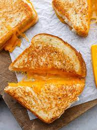

Grilled Cheese

Simple Grilled Cheese Recipe
Learn how to make the perfect gooey, crunchy grilled cheese.
The ultimate comfort food for any occasion!
Ingredients
- 4 slices white bread
- 3 tablespoons butter, divided
- 2 slices cheddar cheese
Steps
- Preheat a non-stick skillet over medium heat. Generously butter one side of a slice of bread. Place the bread butter-side down in the heated skillet and add one slice of cheese on top of bread. Butter a second slice of bread on one side and place the butter-side up on top of the cheese.
- Cook until lightly browned on one side. Flip over and continue cooking until cheese is melted. Repeat with remaining ingredients.